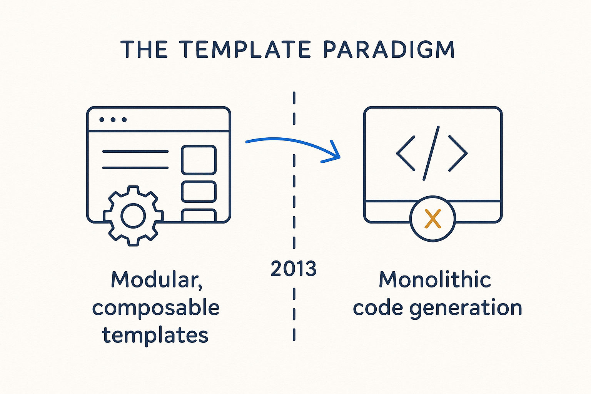

A named historical break — around 2013 — when modular, composable templates were replaced by monolithic code generation, losing composability and maintainability.

> A named historical break — around 2013 — when modular, composable templates were replaced by monolithic code generation, losing composability and maintainability.
The template paradigm names a break most of the industry took without noticing. Early metadata-driven tooling generated code from modular, composable templates — small building blocks you could combine, override and reason about. Around 2013 the field drifted toward monolithic code generation: big, opaque generators that emit everything at once. It felt more powerful, and it quietly cost the two things that made the earlier approach durable — composability and maintainability.
The lesson matters now because AI tempts everyone back into the same trap. A large model can generate a whole pipeline in one shot, which is exactly the monolith again, dressed in new clothes. When the output is one big block, you can’t reuse a piece, can’t override one rule, can’t trace why a line is there — you can only regenerate and hope. Modularity is what keeps generated systems changeable instead of disposable.
Breakthrough Modeling takes the older lesson forward: generate from small, composable, named pieces — templates, rules, metadata — so the result stays inspectable and maintainable even when an AI is doing the assembling. Power without composability is just a bigger thing to throw away.
Where it lives: the AI & innovation history of Breakthrough Modeling — the break worth not repeating.